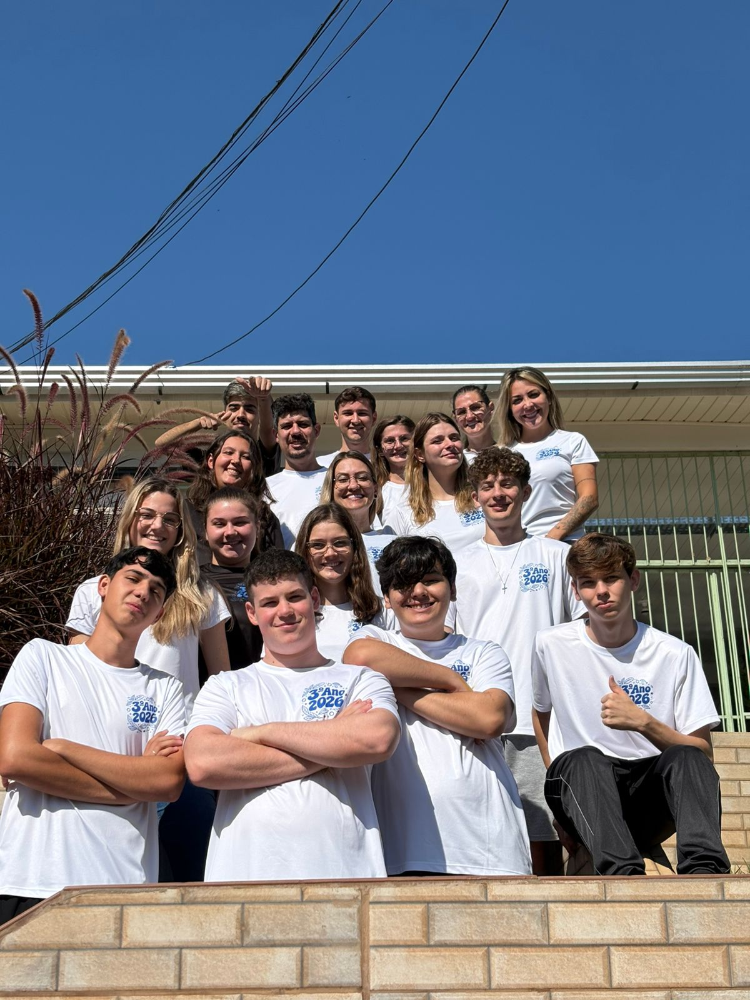

Sobre nosso
Trabalho

Sobre o IFA
O IFA é um Projeto Integrador do Ensino Médio que tem como finalidade reunir conhecimentos adquiridos em diferentes áreas de estudo, permitindo que os estudantes desenvolvam projetos relacionados a temas importantes para a sociedade.
A proposta do projeto é estimular a pesquisa, a criatividade, o pensamento crítico e o trabalho em equipe, incentivando os alunos a irem além dos conteúdos tradicionais trabalhados em sala de aula. Por meio dessa iniciativa, os estudantes têm a oportunidade de investigar assuntos, identificar problemas, buscar informações e desenvolver soluções ou formas de conscientização. Além de contribuir para a formação acadêmica, o IFA também proporciona experiências importantes para o desenvolvimento pessoal dos participantes, como organização, responsabilidade, comunicação, autonomia e colaboração. Nosso projeto busca transformar o conhecimento teórico em algo prático e acessível, aproximando os conteúdos estudados da realidade cotidiana. Dessa maneira, o IFA se torna uma oportunidade de aprendizado, troca de experiências e construção coletiva do conhecimento. Nesta edição, a turma 301 desenvolveu um trabalho voltado à saúde mental, abordando diferentes transtornos mentais, suas características, sintomas e possibilidades de tratamento. A iniciativa procura ampliar o acesso à informação e incentivar o diálogo, a empatia e a conscientização sobre o tema.
← Voltar para o inícioSobre nós
Somos os alunos da turma 301 e desenvolvemos este projeto com o objetivo de compartilhar informações, promover o conhecimento e conscientizar as pessoas sobre um tema de grande importância: a saúde mental.
Acreditamos que falar sobre saúde mental é essencial para construir uma sociedade mais informada, acolhedora e livre de preconceitos. Por isso, buscamos reunir informações sobre diferentes transtornos mentais, seus sintomas, características e possíveis formas de tratamento. Durante a elaboração deste site, tivemos a oportunidade de pesquisar, aprender e aprofundar nossos conhecimentos sobre assuntos que muitas vezes são pouco discutidos ou cercados de desinformação. Nosso principal objetivo é tornar essas informações mais acessíveis, ajudando os visitantes a compreenderem melhor a importância de cuidar da saúde mental e de respeitar as dificuldades enfrentadas por outras pessoas. Este trabalho representa o esforço, a dedicação e a colaboração dos integrantes da turma 301. Esperamos que o conteúdo apresentado possa contribuir para a conscientização e incentivar cada vez mais o diálogo sobre saúde mental.
